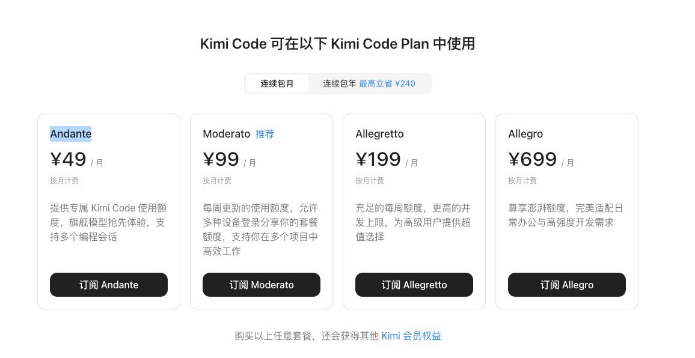

時璃風医詩🌈🏳️🌈
@hagishigure
不如Pseudo-Logoi，Apate，Androktasiai🥴。

howie.serious
@howie_serious
用 haiku（俳句）、sonnet（十四行诗）、opus（杰作）来命名模型的小杯中杯大杯，是有品味且克制的。
但是，andante？moderato？allegretto？allegro？
认真的？
要么是文化高到大气层，要么就是装而已。二者是有些微差别的。
再有文化，也得稍加克制。 https://t.co/mbAkWoGy80 https://t.co/GA4t81g1yK